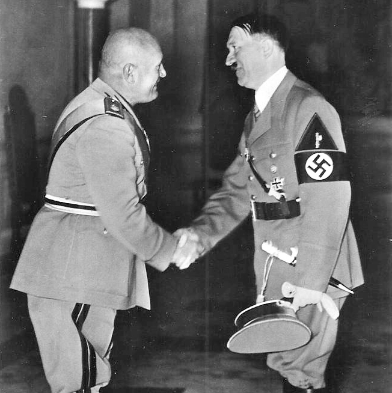

Outbreak of World War II
In March 1936, against the advice of his generals, Hitler ordered German troops to reoccupy the demilitarized left bank of the Rhine.
Over the next two years, Hitler made alliances with Japan and Italy and moved against Autria and Czechslovakia, all without resistance from Britain, France and the rest of the Allied Forces.
Once the alliance with Italy was finalised in the "Pact of Steel", Hitler then signed a non-aggression pact with the Soviet Union.

On September 1, 1939, Nazi troops invaded Poland, which prompted Britain and France to declare war on Germany. This day marked the beginning of the second World War